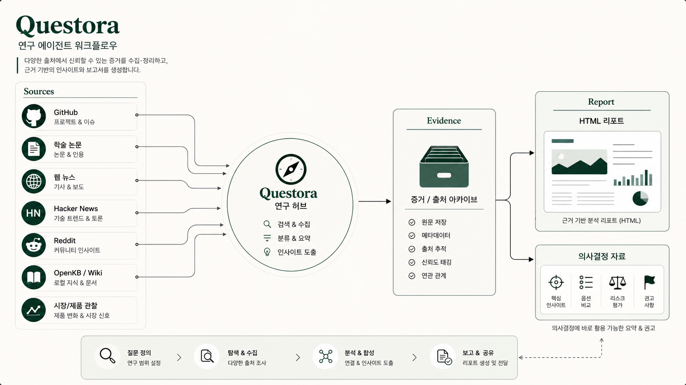

Questora는 질문 유형에 따라 GitHub 프로젝트·이슈와 기술 동향, 논문·학술자료와 인용 정보, 웹 뉴스와 Hacker News, Reddit 최근 30일 반응, OpenKB·Wiki 기반 로컬 지식, 시장·제품 관찰 데이터를 조사 경로로 선택하는 통합 조사 에이전트입니다.
Questora
Overview
Problem
조사 채널과 엔진이 분리되어 있으면 같은 질문을 여러 곳에서 반복 검색하고, 어떤 근거와 원본 데이터를 기준으로 판단했는지 다시 연결하기 어렵습니다.
Approach
질문의 목적과 최신성 요구를 기준으로 적절한 조사 경로를 고르고, 여러 엔진의 결과를 하나의 evidence와 보고서 흐름으로 통합했습니다.
- 질문 유형과 조사 범위 분류
- GitHub·논문·웹·커뮤니티·OpenKB/Wiki 중 경로 선택
- 근거·출처·원본 데이터 evidence 저장
- 통합 결과를 HTML 보고서와 의사결정 자료로 생성
Screen evidence
조사 요청이 선택된 경로와 전문 에이전트 실행으로 이어지고, 결과와 근거를 다음 검토에서 다시 사용할 수 있는 흐름입니다.
